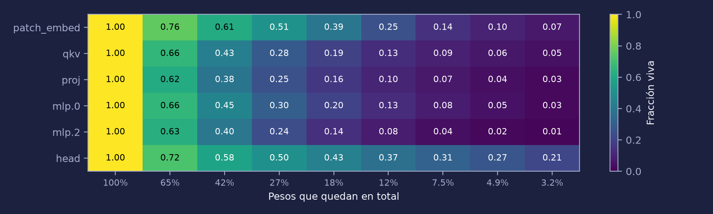
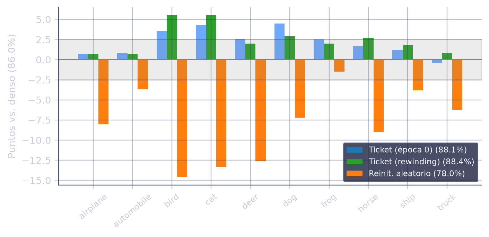
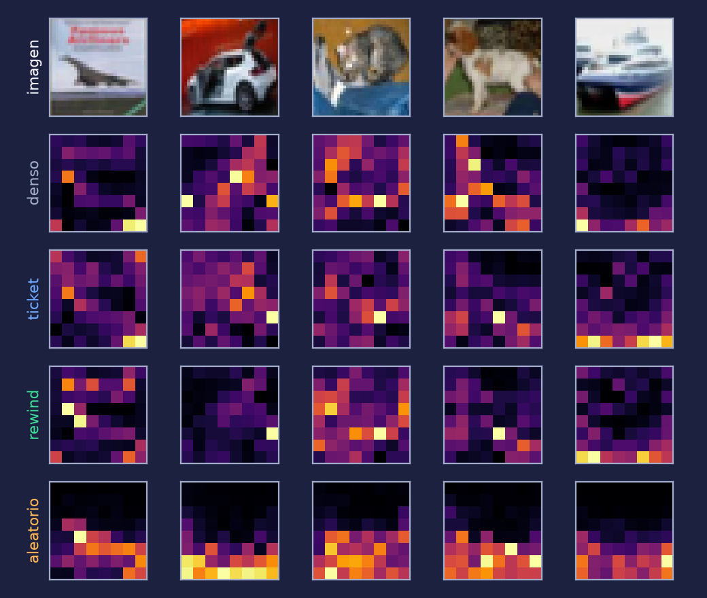
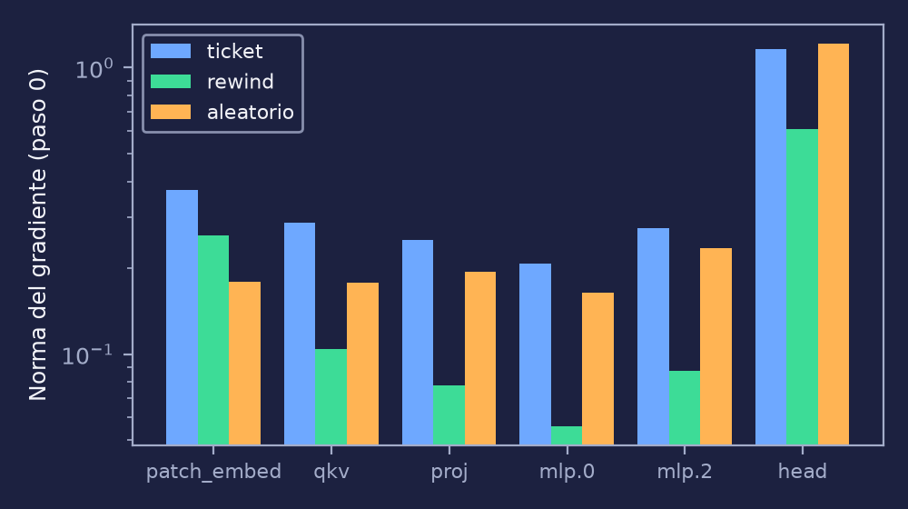

La Lottery Ticket Hypothesis en un MLP, una CNN, una ResNet y un Vision Transformer
José Antonio Mérida
2 de noviembre de 2026
Cada línea es un peso.
Sin los pesos de menor |w|: ~10% quedan.
Entrenada desde los mismos valores iniciales, esa subred aprende casi igual que la red completa: un boleto ganador.
Control: la misma estructura con pesos nuevos. Si rinde peor, importan los valores, no solo la forma.
Mi hipótesis: mientras más compleja la red, más tarde (mayor k) se "fija" el ticket. Lo pruebo en un MLP, una CNN, una ResNet y un ViT.
nn.Modulelth.py (máscaras, IMP, control)marimo: notebooks reactivos guardados como .py (buenos para git), exportables a HTML.
uv: entornos de Python reproducibles (uv.lock).
Claude Code: asistente en la terminal que lee el repo, edita y corre comandos con mi permiso.
Evolución: MLP → CNN → ResNet y ViT → comparación y rewinding → ViT más largo e inspección de máscaras. Agregar los prompts de sesiones anteriores
fc
Cada bloque suma su entrada a la salida (skip connection): el gradiente llega fácil a las primeras capas. Se podan solo las convoluciones, con poda global; fc (640 pesos) queda intacta. Entrena con lr 0.1, sin warmup.
patch_embedhead sobre [CLS]
qkv → atención → proj→LayerNorm→mlp.0 → GELU → mlp.2
Cada parche es un token. En cada bloque, el [CLS] "mira" a los 64 parches (los mapas de atención son esa fila, en una cuadrícula de 8×8). Poda global sobre todas las capas, con warmup de lr.
| Optimizador | Épocas por ronda | Rondas | Poda | Punto de rewind | |
|---|---|---|---|---|---|
| MLP · MNIST | Adam 1.2e-3 | 5 | 15 | por capa | – |
| CNN · CIFAR-10 | Adam 3e-4 | 30 | 10 | por capa | – |
| ResNet | SGD lr 0.1 (÷10 dos veces) | 77 | 10 | global, solo conv | época 1 |
| ViT | AdamW 1e-3, warmup 2 épocas | 20 | 8 | global | época 2 |
| ViT largo | AdamW 1e-3, warmup 5, aumento fuerte | 100 | 8 | global | época 5 |
Los nombres en código son las filas de las figuras de inspección: cuántos pesos sobreviven en cada tipo de capa. Las arquitecturas difieren en más que su complejidad (optimizador, schedule, poda), y eso limita lo que se puede concluir.
Eje x: % de pesos que quedan (escala log; a la derecha la red es más chica). Eje y: accuracy de prueba. Si la línea azul se mantiene arriba y la naranja cae, el ticket funciona.
El ViT de 20 épocas llegó a 78.9% y parecía subentrenado, así que "el ticket supera a la red densa" podía ser solo un baseline débil.
Ahora: 100 épocas, más aumento de datos (RandAugment, random erasing, mixup/cutmix) y label smoothing.
head con 21% y mlp.2 con 1%
Fracción de pesos vivos por tipo de capa en cada ronda (ticket). Con 3.2% de los pesos en total, la capa de salida y patch_embed (7%) pierden mucho menos que las capas MLP.

Diferencia contra el denso (86.0%). Ticket −0.4 a +4.5 puntos, rewinding +0.7 a +5.5, aleatorio hasta −14.6 (pájaro). Banda gris: ruido de ±2.5 por clase.

Último bloque, 5 imágenes de prueba. Misma máscara que el ticket pero otra inicialización. La inicialización importa, no solo la estructura.

Norma sobre los pesos vivos, por tipo de capa: qkv 0.10 con rewinding vs. 0.29 con el ticket. Posible lectura (sin probar): el warmup ya estabilizó esos pesos.
Cómo leerlo: el gradiente mide cuánto cambiaría la pérdida al mover cada peso. Si es chico, el peso ya está cerca de donde la red lo quiere. El control aleatorio parte con normas parecidas al ticket (head 1.21 vs. 1.16), así que la diferencia entre ambos no parece estar en la escala inicial del gradiente.
En el MLP, la CNN y el ViT, el ticket desde θ₀ iguala o supera a la red densa y le gana al control con pesos nuevos. El ViT de 100 épocas lo confirma con un baseline mejor (86.0%); ahí el rewinding ayuda por debajo de ~8% de los pesos.
Con lr 0.1, regresar a θ₀ no basta (igual que el control). Rebobinar a la época 1 recupera casi toda la accuracy.
Hay uno o dos puntos de rewind por arquitectura, y además cambian datos, optimizador y poda. Un barrido de k con varias semillas queda como trabajo futuro.
Límites: una semilla por experimento · ~10,000 imágenes de prueba (diferencias ≤ 1 punto son ruido) · sin transferencia entre datasets.
Referencias. [1] Frankle & Carbin, The Lottery Ticket Hypothesis, ICLR 2019. [2] Frankle et al., Stabilizing the Lottery Ticket Hypothesis, 2019. [3] Renda et al., Comparing Rewinding and Fine-tuning in Neural Network Pruning, ICLR 2020. [4] Touvron et al., DeiT, ICML 2021. [5] Shen et al., Data Level Lottery Ticket Hypothesis for Vision Transformers, IJCAI 2023.